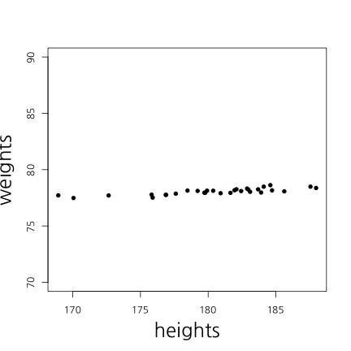

Sentiment Analysis
감정사전 & 감정점수 만들기
김형준
Analytic Director / (주) 퀀트랩 / kim@mindscale.kr
워크숍 관련 온라인 사이트
http://course.mindscale.kr/course/text-analysis

오늘의 목표
감정분석
긍정 단어와 부정 단어의 비율을 계산
사전지식
예측이란 무엇?
자기자신 : Y가 변화하는 추세
다른변수 : X가 Y를 예측
- 키로 몸무게를 예측!
- 키로 성적을 예측?
- 예측이 잘 되려면 서로 상관(관련성)이 높아야 함
-> 감정단어로 영화 평점을 예측
회귀분석(선형(직선) 모형)
예시
- 키가 1cm 증가할 때마다 몸무게가 1kg 증가
- 월 소득이 100만원 증가할 때마다 몸무게가 1kg 감소
- 부정단어가 1개 증가할 때 마다 평점 .1점 감점
- 긍정단어가 1개 증가할 때 마다 평점 .1점 증가
상관관계

## [1] 1

## [1] 0.4885042
상관관계
- x가 증가(혹은 감소)할때 y가 증가(혹은 감소)하는 정도
scale
키가 만약 cm라면, 키가 1cm 증가하면 몸무게는 1kg증가
키가 만약 mm라면, 키가 1mm 증가하면 몸무게는 0.1kg 증가
-> 표준화해야 한다
둘 중 무엇이 상관이 더 클까요?


상관관계 및 회귀분석

| Estimate | Std. Error | t value | Pr(>|t|) | |
|---|---|---|---|---|
| (Intercept) | -8.29 | 11.74 | -0.71 | 0.49 |
| heights | 0.49 | 0.07 | 7.56 | 0.00 |
cor(weights, heights)
## [1] 0.8194181
상관관계 및 회귀분석

| Estimate | Std. Error | t value | Pr(>|t|) | |
|---|---|---|---|---|
| (Intercept) | 69.17 | 1.17 | 58.93 | 0.00 |
| heights | 0.05 | 0.01 | 7.56 | 0.00 |
cor(weights, heights)
## [1] 0.8194181
상관관계 및 회귀분석


X가 2개라면?

## [1] 0.8194181

## [1] 0.1387562
다중회귀분석
| Estimate | Std. Error | t value | Pr(>|t|) | |
|---|---|---|---|---|
| (Intercept) | -20.76 | 11.60 | -1.79 | 0.08 |
| iq | 0.08 | 0.03 | 2.68 | 0.01 |
| heights | 0.52 | 0.06 | 8.66 | 0.00 |
Traninig Vs Test


Over-fitting
Over-fitting(과적합)
How to avoid Over-fitting
- Penality of Model Complexity (MSE 보정)
- Regulization (Lasso, Ridge, Elastic Net) - Bayesian
- Drop Out, Bagging, Feature Bagging
Lasso Vs Ridge

Lasso Vs Ridge


감정분석
Traing Set 과 Test Set 분리
fileName <- "data/IMDBmovie/labeledTrainData.tsv"
data <- read.csv(fileName, header=T, sep="\t", quote="")
nrow(data)
## [1] 25000
data <- data[1:1000, ]
Traing Set 과 Test Set 분할
totalNum <- 1:nrow(data)
set.seed(12345)
shuffledNum <- sample(totalNum, nrow(data), replace = F)
trainingNum <- shuffledNum[1:700]
testNum <- shuffledNum[701:1000]
train.data <- data[trainingNum, ]
test.data <- data[testNum, ]
Term-DocumentMatrix
library(tm)
## Loading required package: NLP
corpus <- Corpus(VectorSource(train.data$review))
tdm.train <- TermDocumentMatrix(corpus,
control=list(stemming = T,
tolower = T,
removePunctuation = T,
removeNumbers = T,
stopwords=stopwords("SMART")))
주요 단어 10000개 사용
library(slam)
word.count = as.array(rollup(tdm.train, 2))
word.order = order(word.count, decreasing = T)
freq.word = word.order[1 : 10000]
tdm.train <- tdm.train[freq.word, ]
Preparation
library("doMC")
## Loading required package: foreach
## Loading required package: iterators
## Loading required package: parallel
registerDoMC(cores=4)
LASSO Regression
alpha <- 1
cv.lasso <- cv.glmnet(as.matrix(t(tdm.train)), train.data$sentiment,
type.measure = "class",
nfolds = 4,
family = "binomial",
alpha = alpha,
parallel = T)
## Warning: executing %dopar% sequentially: no parallel backend registered
LASSO Regression
plot(cv.lasso)

log(cv.lasso$lambda.min)
## [1] -3.365195
LASSO Regression
plot(cv.lasso$glmnet.fit, "lambda", label=TRUE)
Ridge Regression
alpha <- 0
cv.ridge <- cv.glmnet(as.matrix(t(tdm.train)), train.data$sentiment,
type.measure = "class",
nfolds = 4,
family = "binomial",
alpha = alpha,
parallel = T)
RIDGE Regression
plot(cv.ridge)

log(cv.ridge$lambda.min)
## [1] 0.5654804
RIDGE Regression
plot(cv.ridge$glmnet.fit, "lambda", label=TRUE)